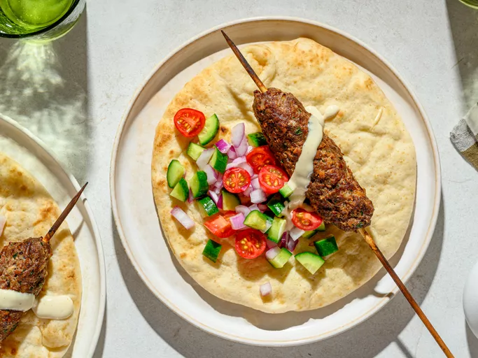

Home
Kofte Recipe

Kofte is a meal which requires meet to cook and it contains a lot of protein. It is healthy food.
Ingredients:
- 1 slice whole grain or white bread, toasted
- 1 ½ medium yellow onion, diced
- 1 ⅓ cup chopped Italian parsley
- 4 cloves garlic, minced
- 8 ounces ground beef
- 4 ounces ground lamb
- 1 ¼ teaspoons salt
- ½ teaspoon ground black pepper
- ½ teaspoon ground allspice
- ½ teaspoon paprika
- ¼ teaspoon ground cardamom
- ¼ teaspoon cayenne pepper
- ⅛ teaspoon ground nutmeg
- 2 tablespoons water
- 4 bamboo skewers, soaked for at least 1 hour
Steps:
- Cut toasted bread slice into a small dice on a cutting board.
- Place onion, parsley, and garlic on top of diced bread; chop until mixture is finely diced.
- Put beef and lamb in a large bowl; add salt, black pepper, allspice, paprika, cardamom, cayenne, and nutmeg. Add onion mixture and water. Mix and mash with your hands until well combined. Wrap in plastic wrap and refrigerate until chilled, at least 1 hour, up to overnight.
- Remove meat from the refrigerator and roll ¼ of the mixture into a ball using wet hands. Pierce middle of meat with a bamboo skewer. Shape meat into a uniform log around the skewer, about 6 inches long and 2 inches wide.
- Meanwhile, preheat a charcoal grill until coals are very hot.
- Grill kebabs until browned and cooked through, about 12 minutes, turning every 3 minutes or so. An instant-read thermometer inserted into the center of a kebab should read at least 145 degrees F (63 degrees C).